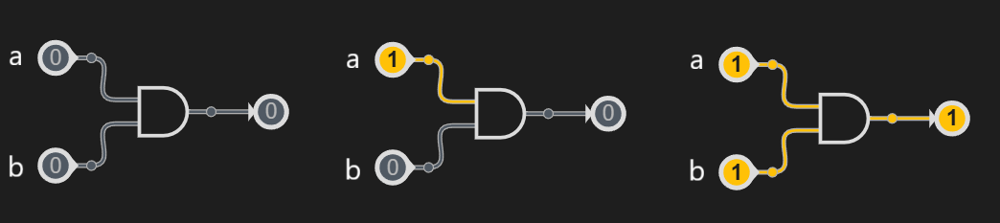

Les Booléens
Introduction
En informatique, en plus des nombres, il existe un type fondamental : le type booléen.
Il sert à représenter des valeurs logiques :
- Vrai (noté True)
- Faux (noté False)
Ce type porte le nom de George Boole, mathématicien du XIXᵉ siècle, qui a formalisé l’algèbre logique.
C’est un type essentiel en programmation car il permet de prendre des décisions et de contrôler le déroulement d’un programme.
Valeurs booléennes
En Python (et dans la plupart des langages), on a deux constantes :
- True → représente le vrai
- False → représente le faux
Ces deux valeurs peuvent aussi être obtenues à partir de comparaisons :
3 < 5 # True
10 == 2 # False
Comparaisons
Les booléens apparaissent très souvent à la suite de comparaisons.
Voici les principaux opérateurs en Python :
| Opérateur | Signification | Exemple 1 | Résultat 1 | Exemple 2 | Résultat 2 |
|---|---|---|---|---|---|
| == | égal à | 5 == 5 | True | 3 == 5 | False |
| != | différent de | 3 != 5 | True | 5 != 5 | False |
| < | strictement inférieur | 5 < 10 | True | 5 < 5 | False |
| <= | inférieur | 5 <= 10 | True | 5 <= 5 | True |
| > | strictement supérieur | 5 > 10 | False | 5 > 5 | False |
| >= | supérieur | 5 >= 10 | False | 5 >= 5 | True |
Ces comparaisons ne sont pas exclusives aux entiers, on peut les appliquer sur tous les types naturels :
Exemples :
3.5 < 8.2 = True
"abc" > "def" = False
"a" > "A" = True
False != False = False
False < True = True
Exercice
Évalue mentalement chaque comparaison ci-dessous puis vérifie avec Python.
Écris le résultat attendu (True ou False) dans la colonne vide.
| Expression | Résultat attendu |
|---|---|
| "z" < "a" | |
| "abc" <= "abd" | |
| "chat" <= "Chat" | |
| "bonjour" != "bonsoir" | |
| 7 >= 7 | |
| 12 != 15 | |
| 3.14 == 3 | |
| 10 < 2 | |
| -5 < 0 | |
| False != True | |
| True == (5 < 3) |
Logique booléenne
Les opérateurs logiques
Le langage Python propose trois opérateurs logiques principaux :
| Opérateur | Syntaxe python | Syntaxe logique | Signification | Exemple | Résultat |
|---|---|---|---|---|---|
| NON | not | \(\overline{a}\) (non a) | inverse la valeur | not True | False |
| ET | and | . | vrai si les deux sont vrais | True and False | False |
| OU | or | + | vrai si au moins un est vrai | True or False | True |
Il existe aussi un opérateur important qui n'est pas naturel en python :
| OU EXCLUSIF | xor | vrai si l'un est faux et l'autre est vraie | True xor True | False |
|---|---|---|---|---|
Exemple :
a = True
b = False
print(not a) # False
print(a and b) # False
print(a or b) # True
Exercice
Évalue mentalement chaque expression booléenne puis vérifie avec Python.
Écris le résultat attendu (True ou False) dans la colonne vide.
| Expression | Résultat attendu |
|---|---|
| not (3 < 5) | |
| (7 >= 7) and (2 != 3) | |
| (3.14 == 3) or (10 < 20) | |
| ("z" < "a") or (4 == 4) | |
| not (False) and (5 > 2) | |
| (6 <= 6) xor (2 > 10) | |
| (True and (8 != 8)) or (1 < 2) | |
| not ("abc" == "def") | |
| (False or (9 >= 9)) and (3 < 1) | |
| (7 != 7) xor (not (2 < 5)) | |
| ("chat" < "chien") or (not (4 <= 4)) | |
| ((5 > 1) and (2 == 2)) or (False) |
Les tables de vérité
| a | b | a . b | a + b | ! a | a XOR b |
|---|---|---|---|---|---|
| False | False | False | False | True | False |
| False | True | False | True | True | True |
| True | False | False | True | False | True |
| True | True | True | True | False | False |
Exercice
Complétez ces tables de vérité.
| a | b | a.b | \(\overline{a.b}\) | a+b | \(\overline{a+b}\) |
|---|---|---|---|---|---|
| False | False | -- | -- | -- | -- |
| False | True | -- | -- | -- | -- |
| True | False | -- | -- | -- | -- |
| True | True | -- | -- | -- | -- |
| a | b | \(\overline{a}\) | \(\overline{b}\) | \(\overline{a}\)+\(\overline{b}\) | \(\overline{a}\).\(\overline{b}\) |
|---|---|---|---|---|---|
| False | False | -- | -- | -- | -- |
| False | True | -- | -- | -- | -- |
| True | False | -- | -- | -- | -- |
| True | True | -- | -- | -- | -- |
On remarque que :
\(\overline{a+b} = \overline a . \overline b\)
\(\overline{a.b} = \overline a + \overline b\)
C'est ce qu'on appelle les lois de Morgan.
Les conditions
En programmation, les conditions permettent de prendre des décisions :
le programme exécute certaines instructions seulement si une condition est vraie.
En Python, cela s’écrit avec les mots-clés if, elif et else.
Structure de base
if condition1:
# instructions exécutées si la condition1 est vraie
elif condition2 :
# instructions exécutées si la condition1 est fausse mais que la condition2 est vraie
# on peut enchaîner plusieurs elif
else:
# instructions exécutées si les conditions 1 et 2 sont fausses
On peut le lire ainsi :
- Si
condition1est vraie, je fais ça ... - Sinon, si
condition2est vraie, je fais ça ... - Dans tous les autre cas, je fais ça ...
Exemple :
age = 15
if age >= 18:
print("Majeur")
else:
print("Mineur")
Circuits logiques
Jusqu’ici, nous avons vu la logique booléenne dans le langage Python.
En électronique, ces mêmes opérations logiques sont réalisées grâce à des portes logiques.
Chaque porte est un petit circuit qui applique une opération logique (ET, OU, NON, etc.) sur ses entrées pour produire une sortie.
Symboles des principales portes logiques
Voici les symboles normalisés utilisés en électronique :

Exemple de circuit
Un circuit combinant plusieurs portes peut être représenté par un schéma.
Exemple :

Exercice
Exercice 1
Recopiez le circuit et indiquez ses états intermédiaires et son état final :
Utilisez les lois de Morgan pour simplifier l'expression.
Exercice 2
On considère le schéma logique suivant :

- Donner la table de vérité de ce schéma logique (A, B, C ∈ {0,1}).
- Traduire ce schéma en une expression Python utilisant
andetor. - Vérifier en Python que votre expression donne les mêmes résultats que la table de vérité.
Exercice 3
On considère les expressions booléennes suivantes :
1. (A or B) and (not C)
2. not(A and B) or C
Pour chacune d’elles :
- Dessiner le schéma logique correspondant.
- Compléter la table de vérité.
Exercice 4
Un feu de circulation piéton s’allume en vert si :
- le bouton d’appel a été pressé (bouton == True),
- et il n’y a pas de voiture détectée (voiture == False) ou qu’il est minuit (heure == 0).
- Dessiner le schéma logique correspondant.
- Écrire en Python une fonction
feu_pieton(bouton, voiture, heure)qui retourneTruesi le feu doit être vert. - Tester la fonction avec quelques cas concrets.